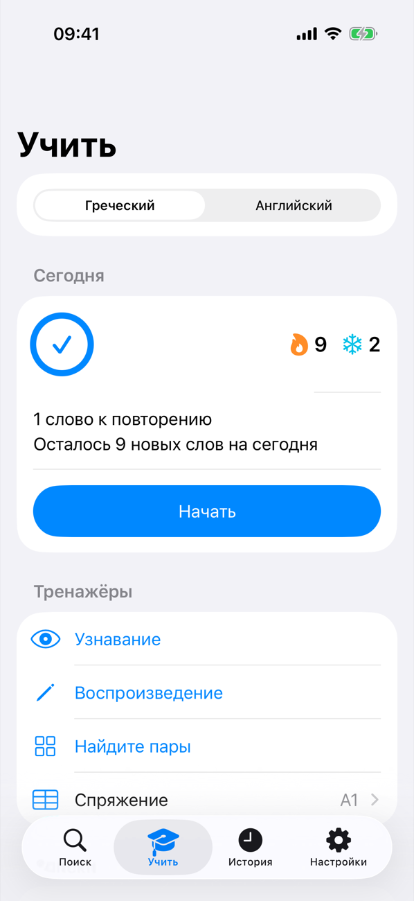
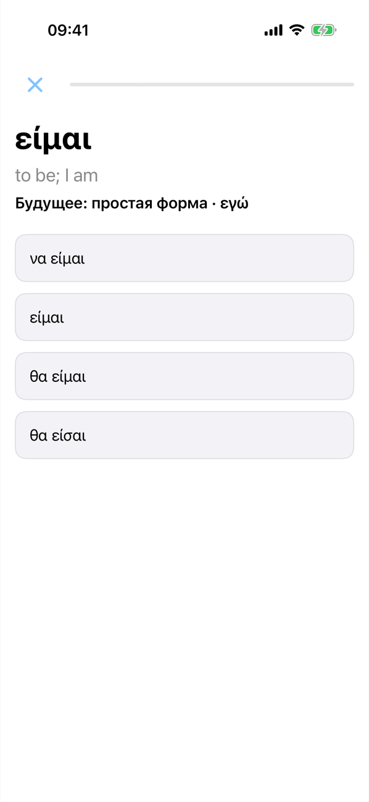
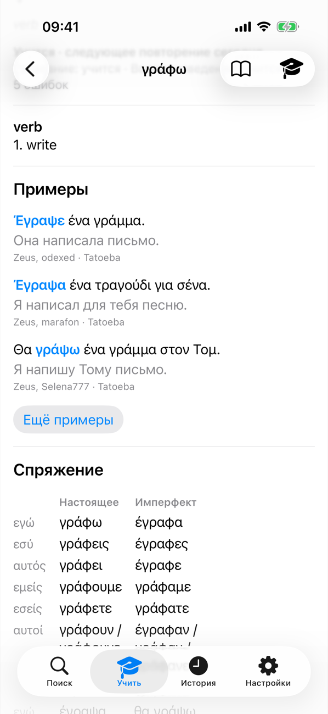
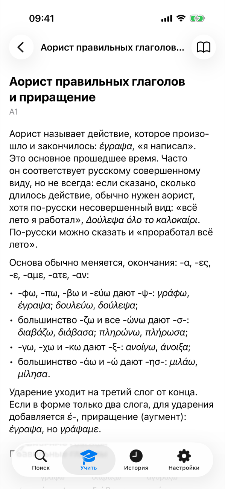

LibreDict
Словарь без интернета, который помогает учить слова
LibreDict — быстрый и лёгкий словарь для английского, греческого, испанского, русского и арабского. Найдите слово и выучите его.
Словарь
Английский уже встроен, остальные языки скачиваются один раз и дальше работают без интернета. Поиск находит любую словоформу (έγραψα найдёт γράφω), а у греческих слов есть таблицы склонения и спряжения.
Учить
Списки слов по уровням (греческий A1–B1, английский A1–C2) или ваши собственные из CSV, Anki и Quizlet. Ежедневная практика с интервальным повторением и настоящими примерами предложений.
Грамматика
Тренажёр спряжения и короткие грамматические темы; первым языком стал греческий.
Конфиденциальность
Без рекламы, аккаунтов и слежки. Всё остаётся на вашем устройстве.
Скриншоты




